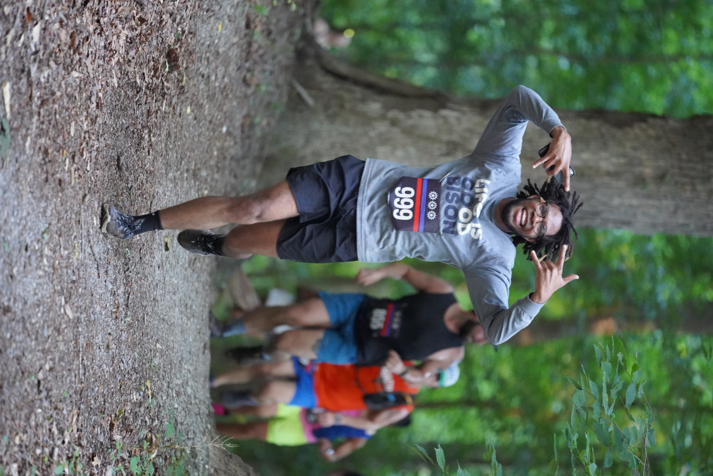
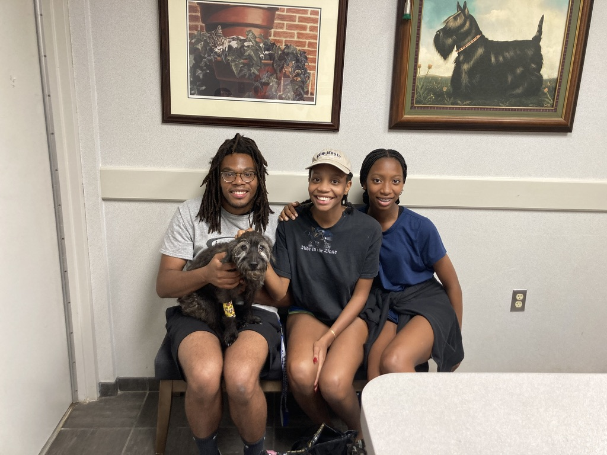

About Me
Born across the river in Maryland I was raised here in Virginia and I went to undergrad at Hampton, in Hampton, Virginia and loved the area so much that I wanted to stay there so I went to Old Dominion University (ODU) across the river in Norfolk, Virginia for my masters. After having met some amazing professors at both undergrad and grad I was able to meet my future advisor Dr. Swinton, from Howard, through Dr. Koch, from ODU, who was working with him at the same time I was considering grad school. Theu both gave me to encouragement I needed to apply and continue going. Outside of research, I am a volunteer with the Lorton Volunteer Fire Department in Virginia, where I'm on the Board. I like fire trucks so I guess it's a pretty good fit.
When I am not working or volunteering, you can find me skateboarding or playing my huge backlog of switch games.
Hobbies & Interests
- Volunteering at the Lorton Volunteer Fire Department
- Skateboarding
- playing video games
📸
Cool moments, and friends:




🎵
Crusing on your board you'll like this, not crusing on a board you might still like this:
🎥🍿
I love movies. Here are some of my recent watches from my Letterboxd: